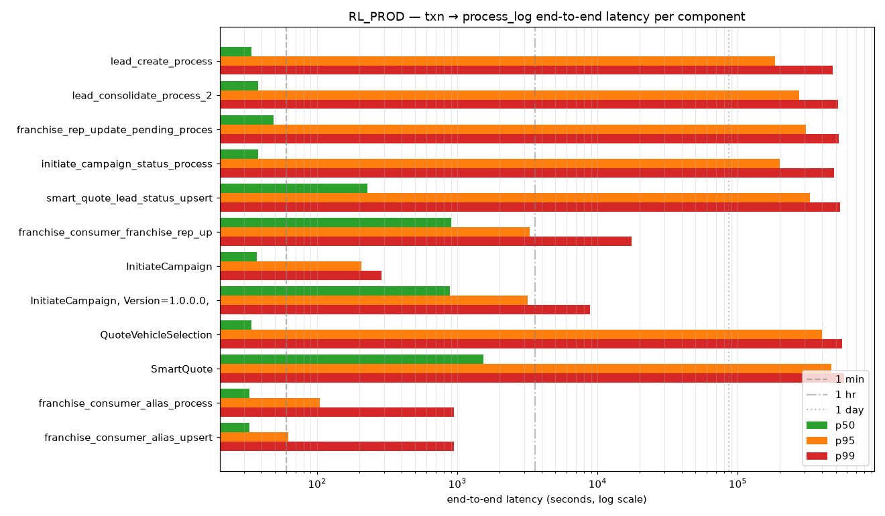
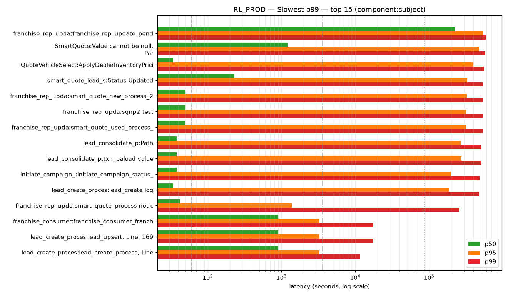
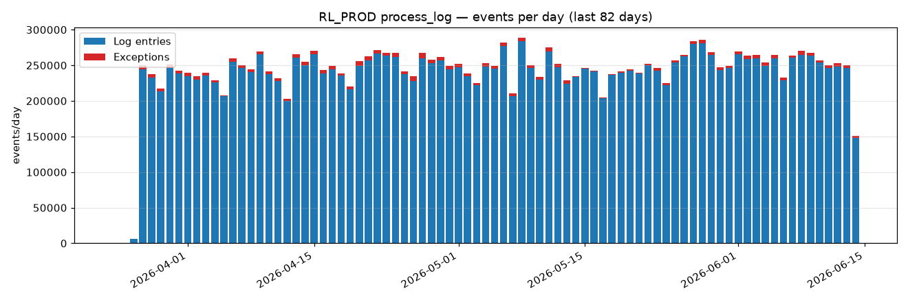
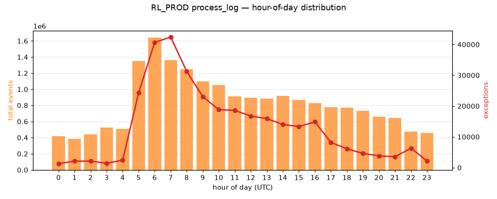
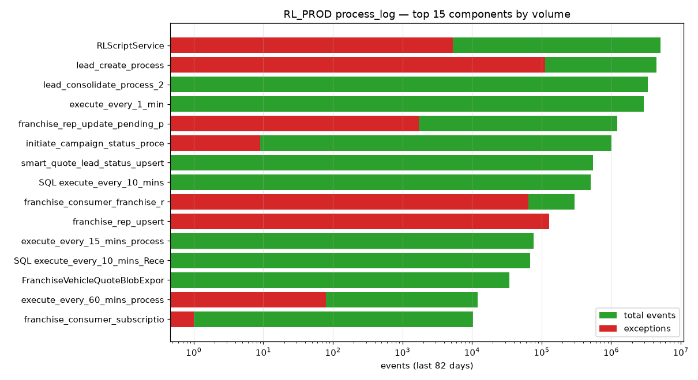
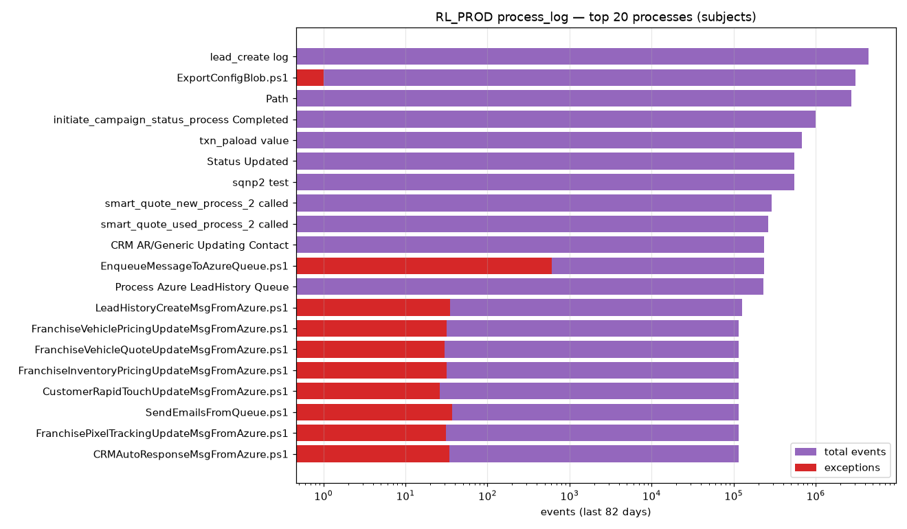

ESC · click anywhere to close
Reverse-engineered ETL throughput, peak load, growth, and end-to-end latency from database state
across the four DAS SQL Server instances. No application-level ETL logs exist, so these numbers
are derived from row timestamps, an SQL Server activity-poll table, the oltp.process_log_*
execution log on RL Production, and the canonical event log in oltp.txn. The output
sizes the new CDP from observed behaviour rather than inferred assumptions.
The four SQL Server instances that feed (or will feed) the CDP. Two databases on MediaLogix (DataManager, scheduler) — where most SSIS staging tables live — are not accessible to the audit account; sizing for those is incomplete.
| Server | Host : port | Server name | Version | Role | Accessible DBs |
|---|---|---|---|---|---|
| MediaLogix | 74.179.80.27 : 1433 | usw2-db-ml-vm-p | SQL Server 2016 SP3 | Legacy DAS operational + ETL source | 9 / 11 |
| RL Production | 20.65.216.199 : 49577 | RL-PROD-SQL01 | SQL Server 2012 SP4 TDS 7.0 | Core OLTP — leads, transactions | 2 / 4 |
| DWRPT | 40.83.161.93 : 1433 | DWRPT-PRD-SQL01 | SQL Server 2019 CU32 | Analytics warehouse — pulls from MediaLogix + RL | 1 / 4 |
| CIM | 20.51.108.231 : 1433 | CIM-PROD-SQL01 | SQL Server 2022 CU9 | Central inventory management | 1 / 4 |
20.51.108.231 as the Megatron host;
independent connection testing reaches Megatron only via 74.179.80.27 (usw2-db-ml-vm-p). The wiki documents
an active AWS → Azure migration — the working hypothesis is that both servers host the MediaLogix databases during the migration
window. Action item open for Ron Mulder. See the resolved entry in the
Database-Inventory wiki page.
Observed peaks across the four servers, with the matching capacity the new CDP should plan for. From REPORT.md §0 (MediaLogix) and §10.6 (cross-server).
| Dimension | Observed | Recommend for new CDP |
|---|---|---|
| Peak single-table ingest | 721 k rows/day (RedDawn.ListingImageDownload_Queue_History, 2024-12-14) | ≥ 1 k rows/min sustained, ≥ 5 k burst |
| MediaLogix peak concurrency | 206 sessions/min at 02:00 UTC | ≥ 250 concurrent connections |
| MediaLogix ETL window | 22:00 – 09:00 UTC (overnight SSIS batch) | Run pipelines outside the legacy window |
| RL Production peak event rate | 1.64 M events/hr at 06:00 UTC = 455/sec sustained | ≥ 1,000 events/sec burst capacity |
| RL Production busiest minute | 4,790 events on 2026-04-22 11:58 (~80/sec for 2 min) | ≥ 500/sec sustained for ≥ 2 min |
| Live OLTP transaction rate | oltp.txn grew 345 M over 18.5 yr ≈ ~50 k txn/day avg | 100 k+ txn/day at recent peaks |
| Total managed footprint | ~700 GB across top tables; CIM.vehicles_removed = 411 GB alone | — |
| File-drop cadence (MediaLogix) | 97 files/day median, p99 = 134, max = 297 | Sustain ~5–6 files/hr peak |
| Backup window | ~720 backups/day (transaction-log backups every ~2 min) | New CDP must coexist with frequent log backups |
From the join of oltp.process_log.txn_id_1 against oltp.txn (12.5 M matched rows over 82 days). Two distribution shapes emerged: reprocessing components (p50 is real first-touch latency; tail is age-at-retouch) and one-shot components (p99 is a real SLO target).
| Component | Matched | p50 first-touch | p95 age@retouch | p99 |
|---|---|---|---|---|
| lead_create_process | 4.42 M | 35 s | 2.1 d | 5.5 d |
| lead_consolidate_process_2 | 3.40 M | 38 s | 3.2 d | 6.0 d |
| franchise_rep_update_pending_process_2 | 1.22 M | 49 s | 3.5 d | 6.1 d |
| initiate_campaign_status_process | 1.01 M | 39 s | 2.3 d | 5.6 d |
| smart_quote_lead_status_upsert | 551 k | 230 s | 3.8 d | 6.2 d |
| Component : Subject | Matched | p50 | p95 | p99 |
|---|---|---|---|---|
| lead_match_process | 4 | 48 s | 217 s | 281 s (4.7 min) |
| franchise_consumer_smart_follow_txn_upsert | 7 | 39 s | 171 s | 268 s |
| InitiateCampaign | 657 | 38 s | 207 s | 287 s |
| franchise_consumer_alias_process | 125 | 34 s | 105 s | 941 s (15.7 min) |
| ParseHTTP | 4 | 134 s | 277 s | 295 s |
| InitiateCampaign, Version=1.0.0.0 | 511 | 885 s | 3,178 s | 8,844 s (2.5 hr) |
| franchise_consumer_franchise_rep_upsert | 13.8 k | 900 s | 3,268 s | 17,572 s (4.9 hr) |
| SLO target | Observed | Recommend |
|---|---|---|
| Hot-path first-touch p50 | 35 – 50 s | ≤ 30 s p50 |
| One-shot p99 (clean paths) | ~290 s | ≤ 5 min p99 |
| One-shot p99 (heavy upserts) | ~17,500 s | ≤ 1 hr p99 (5× improvement) |
| Reprocessing window | ~7 days | Preserve — workflow demonstrably needs multi-day tolerance |
| Worst tail anywhere | 28.9 d (reactivate_consumer_process) | Hard cap at 24 hr |


The oltp.process_log_* tables (one current + 11 weekly archives) are the only real ETL execution log in the estate.
They reveal that RL Production runs a queue-driven Azure Service Bus polling architecture — not SSIS — with
a peak at 06:00 UTC. 19.86 M events over 82 days, 1.60 % overall error rate.




Top tables across the four servers ranked by total rows. Used for sizing ingest connectors and storage capacity. Date span is the time covered by the table's primary timestamp column after filtering sentinel dates.
| Server.Database.Table | Rows | Size | Date span | Role |
|---|---|---|---|---|
RL_PROD.oltp.txn | 345 M | 12 GB | 18.5 yr | Core transaction event log |
RL_PROD.oltp_Archive.lead_history | 342 M | 83 GB | 12.6 yr | Historical leads |
MediaLogix.Megatron.ListingImageDownload_ReDownload | 298 M | 44 GB | 7.7 yr | Image download queue |
MediaLogix.RedDawn.ListingImageDownload_Queue_History | 147 M | 17 GB | 1.5 yr | Image-download history (peak 721 k/day) |
RL_PROD.oltp_Archive.franchise_consumer_txn | 141 M | 24 GB | 7.6 yr | Historical consumer txns |
DWRPT.DataStaging.JuiceReporting_HiddenTable_MarketingSummary | 118 M | 48 GB | 2.0 yr | Largest JuiceReporting mart |
MediaLogix.Megatron.Shortener | 110 M | 113 GB | — | Link shortener (no usable ts column) |
MediaLogix.Trax.AdCapture_MonthlyTotal | 108 M | 4 GB | — | Ad capture monthly rollup |
DWRPT.DataStaging.grail_srpactions_daily | 99 M | 4 GB | 7.5 yr | SRP daily rollup (mirror of MediaLogix.Prime) |
MediaLogix.MegatronRepository.ListingRepository | 74 M | 52 GB | 13.8 yr | Listings warehouse |
CIM.Central Inventory.FHD.vehicles_removed | 40 M | 411 GB | 3.6 yr | Single largest table in the estate |
Every number on this page is rooted in committed CSV / chart artefacts. The full 731-line report has methodology, edge cases, follow-ups, and the data-quality flags. All scripts are read-only and re-runnable.
data/ + data/rl_prod/. Server-namespaced; every aggregation is regenerable.